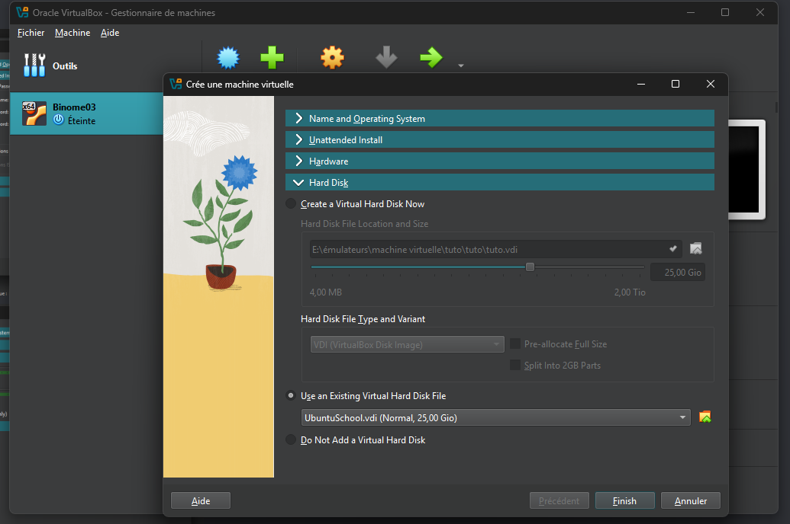
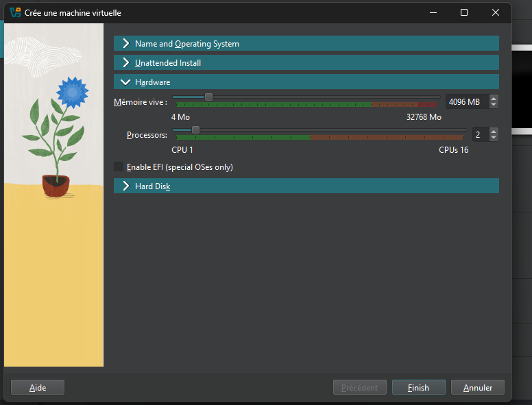

Virtualisation
La virtualisation est une technologie qui permet de créer des services informatiques à l'aide de ressources matérielles partagées.
Différences entre émulateur, simulateur et outil de virtualisation :
- L'émulateur reproduit fidèlement un hardware spécifique (exemple : Bluestacks pour Android).
- Le simulateur modélise le comportement d'un système (exemple : simulateur de vol).
- La virtualisation partage efficacement les ressources matérielles existantes.
Types de virtualisation :
| Produit | Type de Virtualisation | Type d'Hyperviseur |
|---|---|---|
| VirtualBox | Virtualisation complète | Hyperviseur type 2 |
| VMware | Virtualisation complète | Hyperviseur type 2 |
| Stratus | Virtualisation matérielle | Hyperviseur type 1 |

installation
